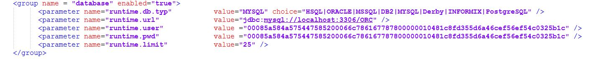

Orchestra Server

Topic content
Installation
Unzip the Package if needed into your destination folder. Copy the Orchestra folder from the from Application folder into your tomcat8/webapps. If you rename the Orchestra folder, the Path to the URL changes. On standard values, Orchestra is later accessible on http://localhost:8080/Orchestra .
After that you have to edit the logging.properties which is located in tomcat8/webapps/Orchestra/WEB-INF/classes
In this file you can set up the Orchestra-logging like this
# Global properties
# "handlers" specifies a comma separated list of log Handler classes.
handlers= java.util.logging.FileHandler
# To also add the ConsoleHandler, use the following line instead.
# handlers= java.util.logging.FileHandler, java.util.logging.ConsoleHandler
# Default global logging level.
# There are seven Levels: SEVERE (highest value), WARNING, INFO,
# CONFIG, FINE, FINER and FINEST (lowest value)
.level = WARNING
# Handler specific properties.
# default file output is in user's home directory.
java.util.logging.FileHandler.pattern = /opt/orc_runtime/log/orchestra_%g.mlog
java.util.logging.FileHandler.limit = 250000
java.util.logging.FileHandler.count = 8
java.util.logging.FileHandler.formatter = emds.log.context.StandarFormatter
# Limit the message that are printed on the console to INFO and above.
java.util.logging.ConsoleHandler.level = WARNING
java.util.logging.ConsoleHandler.formatter = java.util.logging.SimpleFormatter
# configuration for the orchestra standard formatter
emds.log.context.StandarFormatter.wantStack = false
emds.runtime.sql.level = WARNING
# Facility specific properties.
# For example, set the emds.runtime.dbtarget logger to log FINE messages:
# emds.runtime.dbtarget.level = WARNING
The adjustable Parameter .level defines the granularity of logging. We recommend .level = WARNING
It is important that the defined path exists and is writeable for the tomcat-user. The parameter %g creates numbering for the log-files.
FileHandler.limit defines the maximum size, FileHandler.count defines the number of the log-files.
Furthermore you have to modify the environment_settings.xml consistent to the database used like in the picture below.

runtime.url corresponds to your network-address where your Orchestra-database is located
runtime.user and runtime.password are the DB-logindata. By default both are set to 'ORCHESTRA'.
If you have to use another login, you have to encrypt the two strings by using the script gen_password.sh located in the "Startscripts/Unix"-Folder found on the orchestra CD.
(Before this tool can be used, a configuration of the environment is necessary. Please referer to Configuration of the command line environment)
Start gen_passwd from the command line as follows:
gen_passwd.sh <YOUR_PASSWORD>
Copy the encrypted values to the environment_settings.xml.
Start your tomcat, go to http://localhost:8080/Orchestra and use the login-data admin/admin.